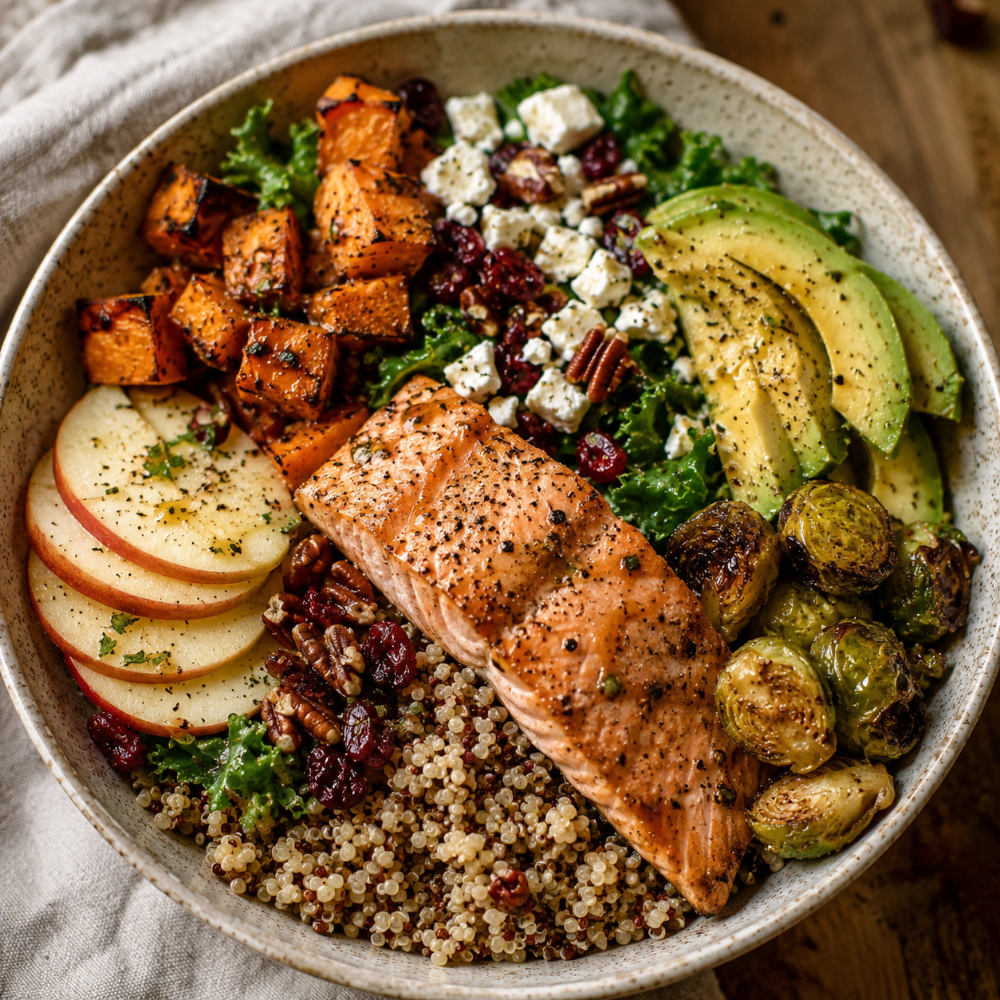
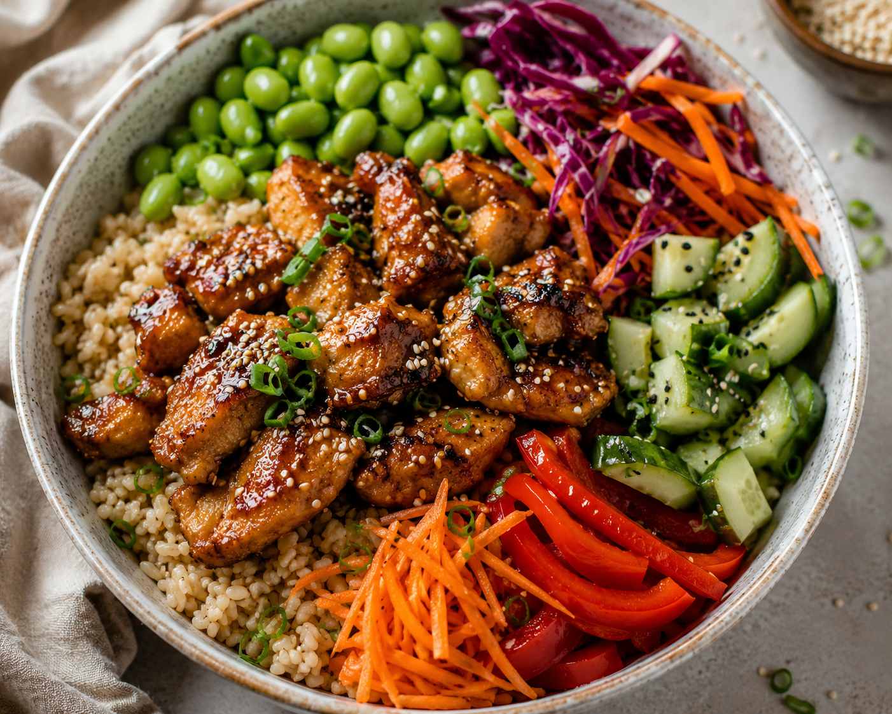

BOWLS
Sesame Chicken Bowl
Sweet, savory sesame chicken over fluffy rice with broccoli, bell pepper, carrots, edamame, and purple cabbage. A sesame ginger dressing brings everything together for a colorful bowl with plenty of texture.

Instructions
-
In a bowl, whisk together the soy sauce, honey, rice vinegar, sesame oil, garlic, ginger, and cornstarch. Add the chicken and toss to coat. Marinate for 15 to 30 minutes.
-
Cook the rice according to package directions if it is not already prepared.
-
In a small bowl, whisk together all of the sesame ginger dressing ingredients until well combined. Add water as needed to reach your preferred consistency and set aside.
-
Heat the olive oil in a large skillet or wok over medium-high heat. Add the chicken and cook for 5 to 7 minutes, stirring occasionally, until cooked through and lightly browned.
-
Pour any remaining marinade into the skillet and cook for another 1 to 2 minutes, stirring, until the sauce thickens and coats the chicken. Remove the chicken from the skillet.
-
Add a small splash of water to the same skillet and steam the broccoli for 3 to 4 minutes. Add the red bell pepper and cook for another 2 to 3 minutes, until the vegetables are tender-crisp.
-
Divide the rice between two bowls. Top with sesame chicken, broccoli, bell pepper, shredded carrots, edamame, and purple cabbage.
-
Drizzle each bowl with sesame ginger dressing and garnish with sesame seeds and sliced green onions.
-
Serve warm and enjoy.
Simple tip.
Prep the chicken, rice, and sesame ginger dressing ahead of time. Then all you need to do is cook the chicken and vegetables and assemble the bowls.
Make it your own.
Use brown rice instead of jasmine rice, swap broccoli for snap peas, or add cucumber or avocado for another layer of texture. You can also increase the ginger if you prefer a stronger sesame ginger flavor.
Nutrition
Approximate nutrition information per serving. Values can vary depending on ingredient brands, portion sizes, and substitutions.
CALORIES
560
PROTEIN
34 g
CARBOHYDRATES
58 g
FAT
18 g
FIBER
6 g
SERVING SIZE
½ recipe